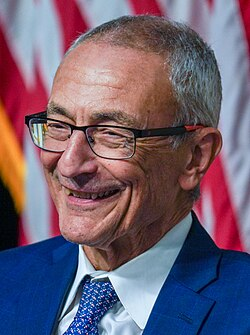

John Podesta
White House chief of staff, born 1949

Bill Clinton's White House chief of staff from 1998 to 2001 and later a counselor to President Obama, described as a longtime advocate for government disclosure of UFO files. 1
At a 2002 news conference he said it was time for the government to declassify records more than 25 years old and give scientists data on the real nature of the phenomenon. He wrote the foreword to Leslie Kean's 2010 book UFOs: Generals, Pilots, and Government Officials Go on the Record. Tom DeLonge's emails to him about UFOs were published by WikiLeaks in 2016. 1,2
Open in the interactive Watcher
Related
- The President White House chief of staff
Sources
- John Podesta Wikipedia
- Who Is William Neil McCasland? Ex-US General Linked to UFO Research Missing Newsweek, Mar. 2026